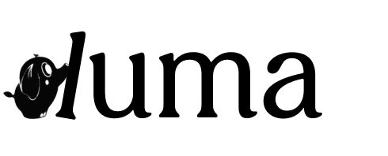
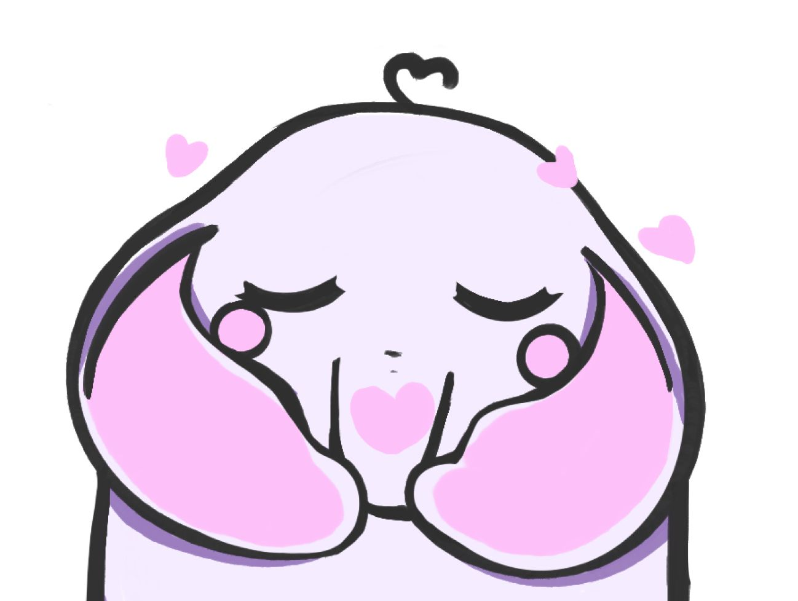

LUMA
Infraestructura de inteligencia biográfica diseñada para devolverle la soberanía a la mujer sobre su propio ritmo.
Rol
Lead Product Designer
Equipo
4 personas
Herramientas
Figma · Lovable · React · TypeScript
Contexto
Trabajo de Final de Máster · BAU
01 — El problema
Diseñar para el promedio es
diseñar para nadie.
Durante décadas, la industria FemTech ha operado bajo el sesgo de la regularidad. Se impuso un estándar universal de 28 días que no representa la realidad biológica, sino un promedio estadístico. El resultado: un sistema que excluye a quienes no encajan en la norma.
El sesgo
Apenas hace 33 años se volvió obligatorio incluir a las mujeres en estudios clínicos.
El conflicto
El 40% de las usuarias (SOP, estrés, perimenopausia) viven en conflicto con apps que etiquetan su ritmo natural como un "error de sistema".
El reto
¿Cómo transformar una métrica clínica en una infraestructura de soberanía biográfica?
Mi contribución · Proyecto de equipo
02 — Las protagonistas
Entender el conflicto para
diseñar la solución.
Buscamos resolver dos tensiones fundamentales. No solo diseñamos una aplicación; diseñamos una nueva forma de habitar la biología.
LUMA no ofrece una experiencia única; se adapta para que Marta encuentre paz y Andrea encuentre potencia.
03 — LA IDENTIDAD: LUMA
Diseñar para la claridad, no para la estadística.
La identidad de LUMA se aleja de la estética clínica tradicional para abrazar una narrativa de acompañamiento y sabiduría. Queríamos que cada elemento visual gritara: "Te entiendo, te escucho y estoy aquí para guiarte".

Nuestra voz se construye sobre tres pilares que equilibran la precisión médica con la calidez humana:
COMODIDAD
Empática y sin juicios: Creamos un espacio seguro donde la vulnerabilidad es bienvenida.
CONTROL
Científica pero accesible: Traducimos datos complejos en información accionable y clara.
CONFIANZA
Mentora experta: Nos posicionamos como esa guía que siempre sabe qué paso sigue.
Lumi · espejo empático
La mentora
Lumi: sabiduría, memoria y cero juicios
Acompañando este viaje creamos a Lumi, una mentora digital (elefante) que encarna la sabiduría y la memoria. Lumi no es una "asistente servicial", es una Autoridad Compasiva que actúa como espejo empático para la usuaria.
SABIDURÍA (Memoria acumulada): Como los elefantes, Lumi tiene una memoria infinita. Recuerda cada ciclo, síntoma y preferencia, permitiendo que la usuaria no tenga que empezar de cero cada mes.
CICLOS (Animal migratorio): Representa el movimiento constante y el retorno. Lumi entiende que el cuerpo no es estático, sino un camino que se recorre una y otra vez.
COMUNIDAD (Protección): Simboliza el cuidado mutuo. Su tono nunca usa lenguaje de "error", "retraso" o "irregularidad negativa", eliminando el estigma clínico.
03 — Innovación lógica
Infraestructura
para la soberanía.
Mi mayor aporte estratégico fue el desarrollo de funcionalidades que priorizan la salud mental sobre la recolección de datos crudos.
01
Innovación 01
Ventana Flexible de Probabilidad
Sustituimos las alertas de "retraso" por un ajuste de ritmo dinámico basado en el promedio real de la usuaria, no en el estándar de la industria.
Sin alertas de retraso cuando la fase se extiende
Ciclos hasta 90 días sin marcar como irregulares
Ajuste manual del ritmo por la usuaria en cualquier momento
03
Innovación 03
Bifurcación de Valor
LUMA no es una app "talla única". Se bifurca en dos caminos estratégicos que responden a dos ejes de necesidad reales, activables de forma independiente o simultánea.
Bienestar
Optimización de la "Batería Social".
Entrenamiento
Rendimiento físico de precisión (fuerza vs. recuperación).
04 — DE LA IDEA AL MVP FUNCIONAL
Validación real:
Construyendo con Lovable
Para LUMA, decidí saltar la barrera de lo estático. En lugar de limitarme a prototipos de clics, construí un MVP (Mínimo Producto Viable) funcional para validar si la lógica conversacional de Lumi y la transición entre ecosistemas realmente funcionaban en manos de usuarias.
Sincronía biológica
dentificar con precisión en qué fase se encuentran a través del lenguaje de los ecosistemas.
Optimización del rendimiento
Ajustar sus entrenamientos y niveles de carga física según su realidad fisiológica.
Gestión Inteligente
Llevar una agenda coherente con su biología, reduciendo la carga cognitiva y el estrés.
05 — EL VIAJE CONTINÚA
Próximos pasos: Implementación y mejora continua.
LUMA es un ecosistema vivo. Actualmente, me encuentro trabajando en la implementación directa a código y el refinamiento de la arquitectura técnica para asegurar que la experiencia sea fluida y escalable.
5/5
Validación
Calificación de usabilidad "Muy fácil" en 4 pruebas de usabilidad con usuarias reales.
100%
Aceptación
De las usuarias prefirieron el lenguaje metafórico sobre el clínico.
5º
Conclusión
El ciclo menstrual reivindicado como Quinto Signo Vital —no una anomalía a corregir.
Hallazgo crítico
El valor no estaba en los datos. Estaba en el tono.
Durante las pruebas, descubrimos que lo que las usuarias valoran por encima de cualquier métrica de análisis es sentirse vistas sin ser juzgadas. La validación de los Ecosistemas (Sabana, Oasis, Meseta, Refugio) confirmó que el éxito de LUMA reside en su capacidad de empatizar con el estado físico y emocional, no solo en contar días.

Una nota final
Diseñar desde la Autoridad Compasiva
es diseñar para devolver soberanía.
LUMA me enseñó que la innovación en fem-tech no vive en el algoritmo más sofisticado, sino en la decisión ética de tratar el ciclo menstrual como Quinto Signo Vital —una constante biográfica— y no como una desviación a corregir. La usuaria ya sabe lo que su cuerpo hace; lo que necesita es una tecnología que finalmente le crea.